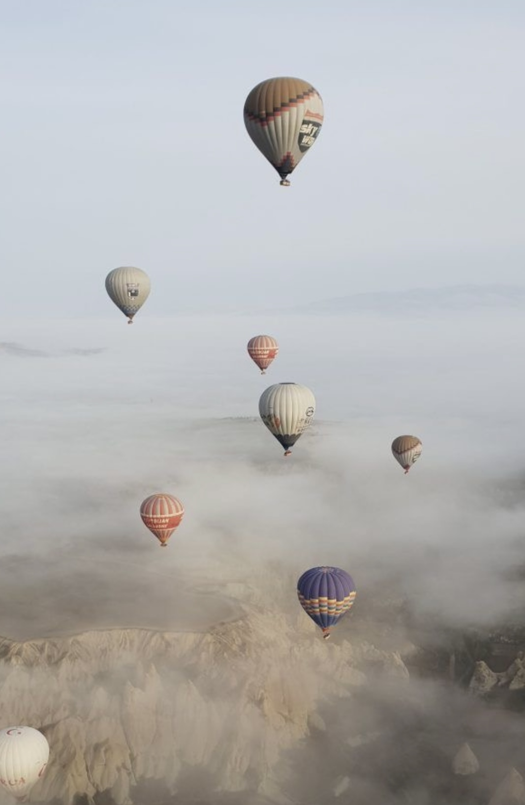

Moon signs in Astrology: what does it mean & what makes each astrological element special.
Moon sign in astrology
Did you ever feel like you are not at all like your zodiac sign? That's probably because your moon sign is stronger!
Your moon sign is responsible for your inner self, your emotions! It is who you are from deep within,
your deepest emotions, instincts, thoughts, It is the way you think, the way you react to things, what
you crave for inside. Most importantly, it shows what you need to feel fulfilled!
If you have a fire moon (moon is Aries, Leo or Sagittarius) - you crave action and adventure. You need
to have a passion and the environment that allows you to live it out! You need to constantly channel
your energy to work on the things you love. You crave adventure, because it inspires you like nothing
else. You need variety that the world can offer, experiences to enrich your mind and your soul. You need
your tribe of people, who want to see you succeed and push you to become better every day.
If you have an air moon (moon in Gemini, Libra or Aquarius) - you need communication and
mind-stimulation. You need to have the ability to share your ideas and thoughts and have people around
who are willing to listen. You love learning and learning new things is a must for you to feel
fulfilled.
If you have a water moon (moon in Cancer, Scorpio or Pisces) - you need comfortability and nourishment.
You need to feel comfortable in your surroundings to feel safe with showing your emotions. You need to
feel that people care for you and will listen to you vent. You need people who are okay with your dreamy
and emotional nature. You need to know you can trust people you are with! You need to feel the
nourishment and care of people around you.
If you have an earth moon (moon in Taurus, Virgo or Capricorn) - you need to feel stable in your
surroundings. You crave stability and security in all spheres of your life. You need to know that your
hard work is paying off, providing you with the life where you have all you need. You need to feel
secure both in your career and your personal life and you need to be sure people have your back at all
times.
Love letter for air signs
Free-spirited, witty, charismatic, caring and friendly - be proud of your Air element!

Keep you head in the clouds and your feet dancing on the ground.
Dear Air signs - you are excellent at communication and making new friends. You make everyone feel
included, make everyone feel like they can let loose and be themselves. You are some of the smartest,
most eccentric people out there and you constantly inspire others with your wit and your
intelligence.
You make people feel comfortable since you accept their weirdness. You crave interesting people who love
to goof around. You make the world a funnier place, where everything is a fun quirky adventure.
Love letter for earth signs
Thoughtful, hard-working, determined, selfless, reliable - be proud of your earth element!

For better, for worse, I got you!
Dear Earth signs, you are the most selfless people out there! You want people to feel safe, to be fed
and well, you care of your loved ones more than you care about yourselves. You are so nurturing and that
makes everyone feel so loved! You are the people who would drive for hours to see someone you care
about. You are the kind of people your friends call in case of an emergency and are sure you'll pick up
and help them. You find joy in helping people and that is one of the most inspiring things about
you!
You are so determined to achieve your goals, you ambition knows no bounds.You are so resourceful, always
finding creative ways to achieve whatever it is you want. You don't give up, ever! You make people work
hard for success, you challenge them to always thrive for more and never stop learning! You are a proof
that hard work pays off, you make people work for miracle in the mundane world! And you show everyone
that the view is worth the climb!
Love letter for fire signs
Confident, energetic, ambitious, vibrant, fun - be proud to be of a fire element!

Any place anytime, you gotta know for you, I'll fight
Dear Fire signs. You are the giving leaders. You work hard for your dreams and are masters of self-love,
but you are the most loving signs out there. You lead people to discover greatness and goodness in them,
because you genuinely want everyone to succeed! You support the people you love and encourage them to
become their best selves. The success of your loved ones is the most important thing for you. You don't
take anyone's bullshit, you know how to be happy on your own, but, for you, being surrounded by your
loved ones is the place to be.
You are the kind of people who know how to word hard and get things done, but also how to have fun and
live life to the fullest! You inspire everyone to live the life they want and do it unapologetically!
Most importantly, you inspire people to fight for what they want. You fight for miracles, you fight for
happiness and you fight for love!
You celebrate every moment, every victory. You are passionate about everything and that is why you are
so successful in life. You let your passion guide you to magic things, to incredible places and amazing
people. I admire your confidence and your passion and the way you know how to give. Never stop being
such inspiring people!
Love letter for water signs
Caring, romantic, creative, passionate and charming - be proud of your water element!

So many dreams, so little time, tonight, let's shine like stars up above
Dear Water signs - you are the most caring and thoughtful signs. You make people feel like they can tell
you everything. You feel people and make them feel comfortable. At the same time you won't let people
underestimate you- you are some of the strongest people out there and you use your intuition and
creativity to achieve your goals. While you are dreamers, you are also doers and no one should forget
this.
You make people feel comfortable and loved! You look after those you care about and you are inspiring in
the way you give and create.